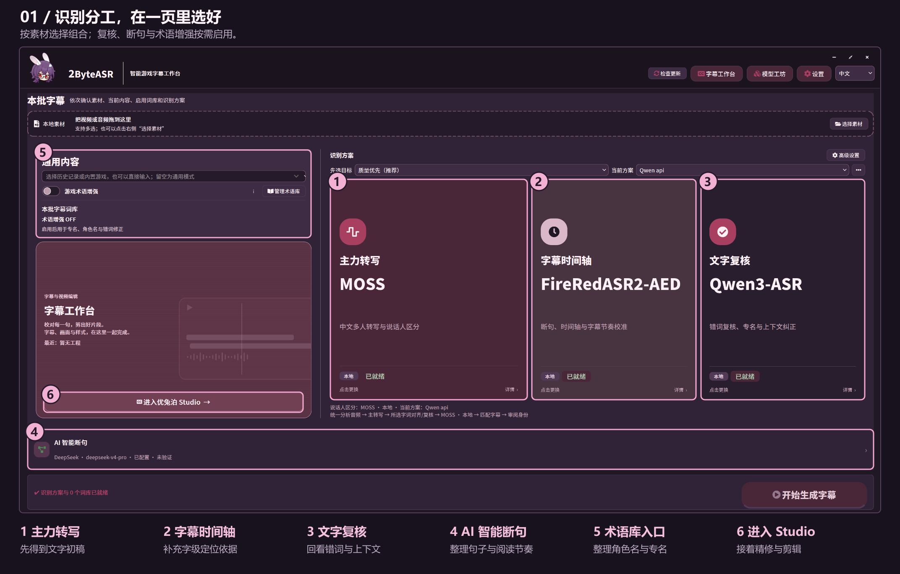
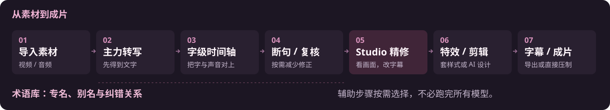
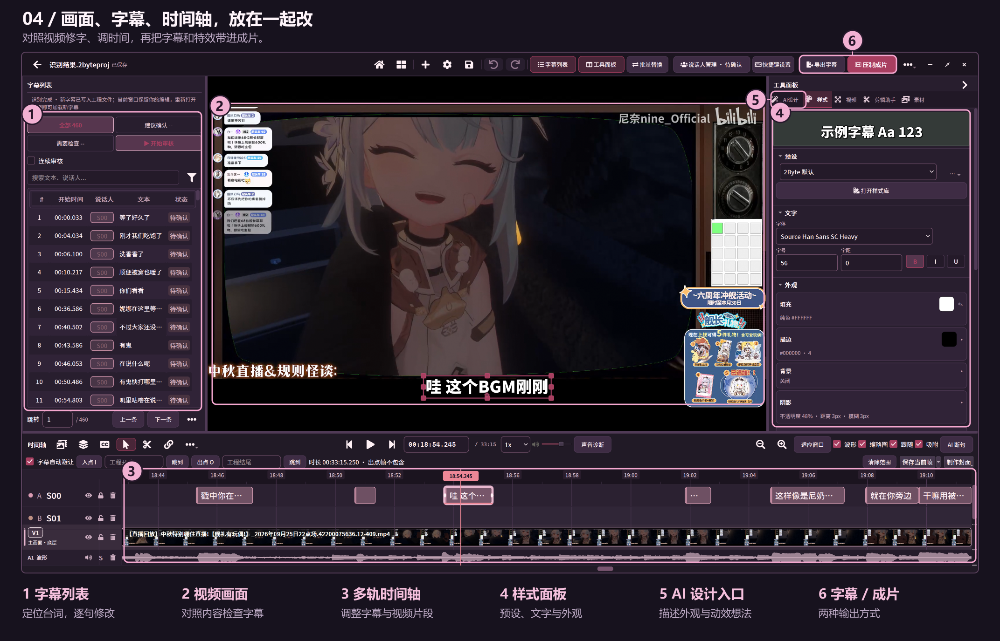
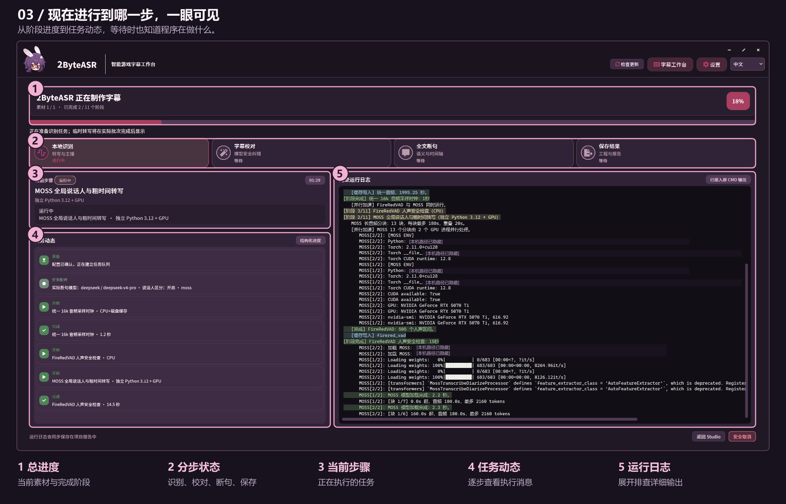
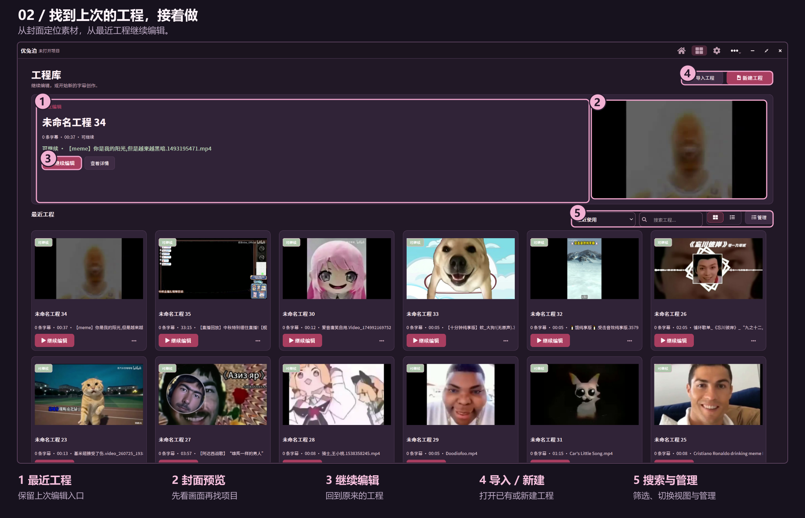

分工识别，对齐到字
先转出内容，再补充字级定位；断句与复核帮你减少初稿修改。
Windows x64 · 中文测试版

放大看细节 ↗01 / 制作流程
先得到更好改的字幕初稿，
再把精力花在最后的细节上。

02 / 少些反复，多些顺手
把识别、校对和编辑接起来，
减少对着声音猜切点的时间。
先转出内容，再补充字级定位；断句与复核帮你减少初稿修改。
手动加词，也能让 AI 搜索角色、技能和别名，少做重复纠错。
有字级时间戳时，拆分、裁剪与合并更容易找到切点。
一键套用已有样式，或让 AI 设计外观与动效，预览后采用。
结合直播 XML 与字幕获得剪辑建议，先预览，再调整取舍。
导出字幕，或将字幕和特效直接压进视频，减少来回切换。
03 / Studio 精修
字幕列表、视频与时间轴一起看。
改字、调整切点，再回放确认。

放大看细节 ↗有字级时间戳时，按字拆分、裁剪和合并；需要时继续手动微调。
套用现有样式，或描述外观与入退场动效，让 AI 设计，预览后采用。
结合直播 XML 与字幕找片段。看过建议、调好范围，再决定保留什么。
04 / 真实界面
截图上的编号对应功能区域。
点击图片，可以放大查看。
阶段状态、当前步骤、任务动态与完整日志。

放大看细节 ↗看封面、搜工程，回到上次的制作进度。

放大看细节 ↗这里展示真实使用界面；具体版本变化与安装条件见 Release。
适合这些制作场景
结合弹幕与字幕整理线索。
用词库积累角色、技能和别名。
让断句与字幕节奏更好调整。
对照画面，把文字与切点改顺。
选择 Release 附件中的 Setup 安装程序。
安装包不含模型权重；在线服务可能收费。
识别后进入 Studio，精修并输出。